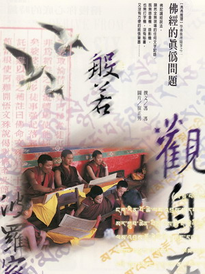

佛经的真伪问题
冯冯
茜塔 / 誊录
佛陀释迦牟尼在世说法将及五十年，话题难道天天都光讲“四念处”、“八正道”、“十二因缘”？不谈别的问题吗？倘若他每天都光是讲这些基本观念，就算听者不厌，他自己不也讲到觉得厌烦？推想他是必然会常常提及基本观念的，但是也必然讲述很多其他道理与分析事理法相，范围必定很广泛深入，包罗万象：从宇宙观到人生哲学、天文地理、社会问题、个别的修行方法，乃至于家庭个人问题……。有时候是佛陀主动提出作为有系统的讲解，形成一个特别的思想系统，有时候是他解答弟子们所提出的疑问。
 佛陀时代，是距今两千五六百年之前，彼时尚无纸张发明。中国汉朝蔡伦造纸技术尚未传入印度，古代印度人可能只是用羊皮或牛皮等动物皮来记录文字，戒杀生的佛教徒是否肯采用羊皮来作文字记录，尚属疑问。另一种记录方式是把文字雕刻在岩石上面。但是现代考古家在印度发现的石刻文字极少极少，印度又没有中国古代的竹简刻字记录，印度的古代历史与宗教哲学思想，极少被石刻保存下来。较为世人所熟知的有关佛教的印度古代石刻，可算是一处石崖上所保留的关于阿育王派遣僧侣赴非洲马达加斯加岛传法的事迹。阿育王的时代已经在佛陀圆寂后数百年，并非与佛陀同时。先是大灭佛教，后来转变为大护佛法的阿育王，所兴建的佛寺佛塔数万，早已被摧毁殆尽，化为尘土，唯一的遗迹只是那一段崖石刻字，但也已经模糊难辨认了。阿育王时代的遗迹都难寻，何况更古老时代的佛陀遗迹？
佛陀讲经说法，显然全无现场的任何文字记录。既然无录音机、录影机、也无打字机，没有秘书，又没有方便的纸张笔墨，更不能一面听佛陀说法，一面就把文字雕刻在崖石上。所以，可以推断，佛陀说法是完全没有留下任何可靠的文字记录的。唯一的保留方式，就是弟子们各别的记忆及日后的口授流传。世代相传下来，等到纸张笔墨发明之后，历代弟子辑集佛语成专集，名之为《花串》（ＳＵＴＲＡ）。中国古代深受儒家影响，孔夫子的语录同样也无记录，只由弟子记忆口授相传，辑录成专集，称之为“经”。佛教徒受其影响，亦把佛语录专册称之为“佛经”，颇为权威圭臬之意；更兼备神圣地位了。
佛语经由数不清的弟子以记忆而辗转口授，虽大致相近于佛意，细节与次序都难免各有出入不同。其中有其它特别独到的一面，也可能有他漏列遗忘的部分：某丙有他偏爱的经文段落，也可能有他不愿保留的文字，各有各的立场、各有各的了解程度与不同的取舍。又有些先后不同时代的观念增减修删，更有些是从原始佛语加上推论或发挥，托言为佛语，更免不了有些是干脆伪造的文字，伪托为佛经。举例而言，传说中国清代一位儒生金圣叹就常常仿照佛经口气来伪造佛经，诳称译自为梵文孤本。唐代武则天女皇帝就伪造了好几种佛经来提高她的身份地位自封为佛。她的伪经，至今也仍有一些在流传，世人以为是真经，至今仍予以持诵。现代的人士，也有人在伪造佛经，伪经比比皆是，鱼目混珠，真伪难分。
重复来说，佛陀虽讲经说法垂五十年，却从未新写一字（原因已如上文所述），若以此而论，则可说并无一本佛经是真迹。不过都是后世弟子依据记忆佛语而予以发挥的文字，只要是符合佛陀说法的原理与修行方法，那就是真经！倘若有人为托佛名而另写经文，其观念内容不符合佛陀原始佛理，或者完全违反原始佛理，这就是“冒牌”佛经。怎么样去判别真伪？那就必须用原始佛教的基本观念去衡量。倘若发现有违反佛理原意的文字，或是充满不合理的叙述，纵然它也以“佛”为名，也就不能予以深信了。
一般而言，记录佛语而不加上解释或评论的，称为“经”，历代信徒根据佛语予以阐扬发挥的论文，则不能称为经，只能称为“论”──例如：中论、百论、大乘起信论……等等。不过后世已经滥用“经”典之名，经论不分了。伪经较多，伪论则较为罕见，原因不难推断，“经”可冒佛名，“论”则本来非佛语，冒之无利可图。
学佛往往被“经”字所唬住，亦不知如何择善固执，经本成千成万，究竟应该持诵那一种？其实不难选择，只须先认清原始佛陀之教基本观念，就不难分辨经文真伪是否值得持诵了。
原始佛教的教义，细节自然也不无可能被历代辗转相传而另有改变。不过，其基本思想的骨干与精神，是大致上仍然确定不变的。一般公认最为可靠的佛语原始记录，是记载于《杂阿含经》上面，此一结集，是佛陀入灭后，由佛陀在世及身弟子五百余人，鉴定佛弟子阿难陀尊者背诵佛语的第一次结集，被一般学者认为可靠。不过，《阿含经》诸集历经世代流传，难免亦有被窜改增删，在梵文时代的版本，已经与先世的巴利版本颇有出入。佛陀说法系用巴利文，并非梵文，梵文是较后世流通印度的语文，将原始巴利文佛语录《阿含花串》译成梵文，已经难免错谬。再加上梵文时代的寺院僧团立场各异，难免窜改增减经文。梵文版本被传入中土，再译成中文以后，差异更多，现在比较一下英译巴利文《阿含经》，与中译本《阿含经》，就发现两者有很多差距。再译的中文版，难免有谬误，再译的英文版，也难免有它的误差。所以，同样是《阿含经》，中英文版两种就对照不起来，很难判断孰为正确译文，也只好采信两者相同之观点而已。若以常识推理，则似乎第一手的译文可能比第二手的再译版较为可靠。换言之，英文版是从原始巴利文版佛语译出，这是第一手译文，中文版佛经则是从梵文版或藏文版再译，并非从原始巴利文译出，这是第二手甚至第三手，可靠性与准确性可能打折扣。现时在国际上流通的佛经，以英文版为多，以译自巴利文的英译为主流，还有从南传佛教资源译成的英文本也较多，汇集成西方佛学研究的主流。
一般由中文版佛经译成英文的，似乎受到较少的重视，甚至有时受到较低的评价，并不是西方学者心存门户之见，而是他们多认为中文版伪造的经文太多，离开原始佛教太远，此语也许不算厚诬，中国人从符秦时代就有人开始伪造佛经，历代都出现“秘本”佛经。毫无佛教内容的经本也标榜佛名，任何迷信也都冠上佛名，弄得神佛难分，真正的原始佛经反而被掩盖了，这是可悲的现象。佛教圈内，很少人从事正本清源的修经工作，可能是因为工程过于浩大，佛经成万成万的版本，从何开始？看来只有学佛人自己凭智慧去判断及取舍真伪了！
原载《佛乘世界》第2期：1997年4月